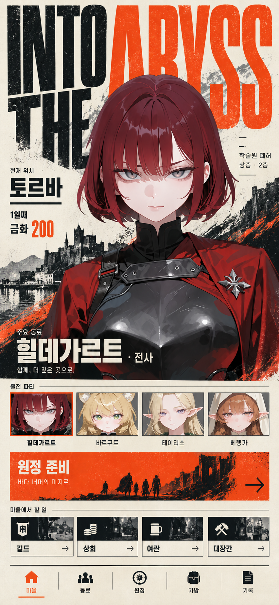

INTO THE ABYSS
B 전체 장면 시안
선택한 검정·주황·아이보리의 편집형 디자인을 마을부터 전투까지 확장했습니다. 승인된 마을 기준 1장과 신규 화면·상태 33개를 11개 보드로 정리한 검토용 시안집입니다.
시안 검토 단계 · 게임 구현 및 배포 없음. 이미지는 내장 이미지 생성 도구로 제작했습니다. 원화의 얼굴·자세·픽셀과 일부 문구·수치에는 생성 오차가 남아 있습니다. 최종 캐릭터 원화, 게임 데이터, 연결 경로와 조작 규칙의 확정 자료로 사용하지 않습니다. 숫자·레벨·보상은 화면 구성용 예시이며 실제 구현 시 원본 데이터와 일치시켜야 합니다.
각 보드를 누르면 원본 이미지를 크게 볼 수 있습니다. 휴대폰에서는 보드를 가로로 밀어 세 화면을 비교할 수 있습니다.
마을 · 선택된 B 방향
기존에 선택한 스타일 기준입니다. 아래 화면들의 검정·주황, 인물과 활자의 겹침, 인쇄 질감의 기준으로 사용했습니다. 이 이미지 역시 최종 게임 문구·에셋은 아닙니다.

동료 · 인물 · 기술
왼쪽부터: 동료 · 인물 · 기술
편성 · 장비 · 연출 미리보기
왼쪽부터: 편성 · 장비 · 연출 미리보기
시안 메모: 하단 메뉴의 현재 위치 강조에 생성 오류가 있습니다. 장비·가방은 가방, 기록은 기록, 탐색은 원정으로 구분해야 하며, 그림 속 마을 강조를 이동 규칙으로 확정하지 않습니다.
출발 · 가방 · 아이템 대상
왼쪽부터: 출발 · 가방 · 아이템 대상
길드 의뢰 · 동료 소개 · 전술 연구
왼쪽부터: 길드 의뢰 · 동료 소개 · 전술 연구
상회 보급품 · 직업 장비 · 대장간
왼쪽부터: 상회 보급품 · 직업 장비 · 대장간
여관 · 기록 · 원정 정산
왼쪽부터: 여관 · 기록 · 원정 정산
시안 메모: 하단 메뉴의 현재 위치 강조에 생성 오류가 있습니다. 장비·가방은 가방, 기록은 기록, 탐색은 원정으로 구분해야 하며, 그림 속 마을 강조를 이동 규칙으로 확정하지 않습니다.
지도 · 봉인된 보관함 · 휴식
왼쪽부터: 지도 · 봉인된 보관함 · 휴식
시안 메모: 하단 메뉴의 현재 위치 강조에 생성 오류가 있습니다. 장비·가방은 가방, 기록은 기록, 탐색은 원정으로 구분해야 하며, 그림 속 마을 강조를 이동 규칙으로 확정하지 않습니다.
탐색 카드 · 확인 · 빈 상태
왼쪽부터: 탐색 카드 · 확인 · 빈 상태
시안 메모: 하단 메뉴의 현재 위치 강조에 생성 오류가 있습니다. 장비·가방은 가방, 기록은 기록, 탐색은 원정으로 구분해야 하며, 그림 속 마을 강조를 이동 규칙으로 확정하지 않습니다.
전투 기본 · 대상 선택 · 아군 상태
왼쪽부터: 전투 기본 · 대상 선택 · 아군 상태
전투 배치 확정 (2026.10.30): 전장에는 지금 차례인 동료 한 명만 세우고, 아래에 아군 네 명 카드(전열·후열, HP·MP)를 둡니다. 기술·보급품·기록은 아래에서 올라오는 시트이며, 기본 화면에 보급품·전투 기록 버튼이 있습니다. 전투 두 보드(r17)는 생성 이미지가 아니라 원본 초상·픽셀 에셋을 HTML로 조합해 래스터화했습니다.
고유 기술 연출 · 전투 승리 · 전투 패배
왼쪽부터: 고유 기술 연출 · 전투 승리 · 전투 패배
이번 시안의 화면 구성 원칙
인물 화면은 큰 원화와 이름, 시설은 담당 인물과 상품·작업, 탐색은 공간과 선택, 전투는 전장과 즉시 행동이 먼저 보이도록 구성했습니다. 인쇄 질감은 그림과 큰 제목에 집중하고, 작은 글·HP·MP·버튼은 조용하고 또렷하게 유지하는 방향입니다.
본 시안에는 동료 목록·개요·기술·편성, 장비 보관함·연출 미리보기, 출발·가방·아이템 대상, 길드 의뢰·동료 소개·전술 연구, 상회 보급품·직업 장비·대장간, 여관·기록·정산, 탐색 지도·봉인된 보관함·휴식, 카드·귀환 확인·빈 상태, 전투 기본·대상 선택·아군 상태·기술 부족·보급품·기록·고유 기술 연출·승리·패배가 포함됩니다.